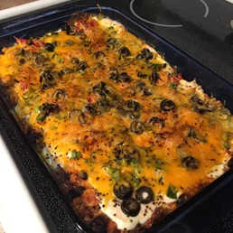

Easy Mexican Casserole

Description
This is an easy and very tasty dish. I often substitute ground turkey and low fat dairy products and it is still
delicious! Serve with chips, salsa and green salad.
Ingredients
- 1 pound lean ground beef
- 2 cups salsa
- 1 (16 ounce) can chili beans, drained
- 3 cups tortilla chips, crushed
- 2 cups sour cream
- 1 (2 ounce) can sliced black olives, drained
- ½ cup chopped green onion
- ½ cup chopped fresh tomato
- 2 cups shredded Cheddar cheese
Steps
- Preheat oven to 350 degrees F (175 degrees C).
- In a large skillet over medium-high heat, cook ground beef until no longer pink. Stir in salsa, reduce heat,
and simmer 20 minutes, or until liquid is absorbed. Stir in beans, and heat through.
- Spray a 9x13 baking dish with cooking spray. Spread crushed tortilla chips in dish, and then spoon beef
mixture over chips. Spread sour cream over beef, and sprinkle olives, green onion, and tomato over the sour
cream. Top with Cheddar cheese.
- Bake in preheated oven for 30 minutes, or until hot and bubbly.